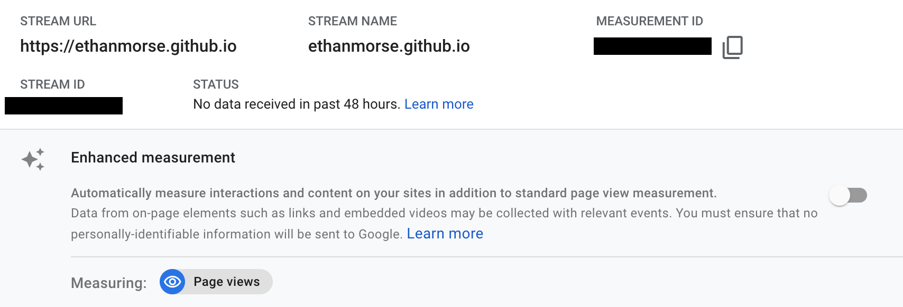

About
About myself, the site, etc.
Contact me for any reason: writing suggestions, comments, questions, criticisms, collaboration, notifications for new posts, etc.
What I Use
See how some of the following items affected my life in my Life Improvements post.
Hobbies
Mountain Biking
I own five bicycles:
I've built a few small features in the forest behind my parents' house. I mostly enjoy technical, steep (up and down) trails, but will ride XC.
Favorites
Articles/Essays
A lot of my thinking and life philosophies are coincidentally in line with Mark Twight's, not because of. Hence the reason why most of my favorite essays are written by him.
-
Why, Mark Twight
-
Honesty, Mark Twight
-
Sport is my Teacher, Mark Twight
-
Twitching with Twight, Mark Twight
-
The Recipe, Mark Twight
-
Thoughts on Meaning and Writing, Dormin111
-
the next step, burkey
-
Play in Hard Mode, Zvi
-
There’s no speed limit, Derek Sivers
-
Clarity, Mark Twight
-
Taking Social Initiative, Neel Nanda
Books
You can find all of my book reviews here.
Website
I only write when I want to. No forcing myself, no saying just 15 minutes, no guilting. Myself and others have found that hobbies' fun factors tend to quickly fade once they become a "chore". I write about things that interest me (although there may be some parts within the subject that don't interest me). Most of writings are never truly finished—I (try to) update them as I or information changes. I enjoy using examples to get my points across.
I try to keep the website design as simple as possible:
-
All public pages are accessible from the home page.
-
Hyperlinks are used where possible. (I use parentheses like this in lieu of those types of notes) instead of footnotes, endnotes, or sidenotes.
-
Default HTML font and sizes are used.
Other notes:
-
I block other people's faces with a black square in personal pictures and only mention initials/vague names for anonymity.
-
The website is hosted using GitHub Pages.
-
I try my best to update pages as needed. Sometimes I forget, sometimes I'm lazy. This site is more for me than others.
-
Analytics software: I use Google Analytics solely on the homepage. This can be verified by looking at any other page's source and looking in the
head section. I use it out of curiosity about the number of homepage views I get. It tracks nothing else, nor do I do anything with the data. Every possible setting that page view measurement doesn't need is turned off.

Individual Page Style
The order of content in individual pages is as follows, with some exceptions for blog-style posts:
-
Title
-
Abstract
-
Contents (i.e., list of sections)
-
[Content]
-
See Also
Specific information:
-
Title uses an
h1 header, while all other section titles are h2 or lower.
-
All section titles have an id.
-
There is no information regarding date posted or last modified. The posting date can be found in the changelog.
-
Figure captions are under figures and table captions are above tables.
-
Sections are separated by a horizontal line (
hr)
The following is inspired by niplav's style section on their About page:
-
Titles and headers use the APA style of capitalization.
-
Tense varies based on the style of the post.
-
List item punctuation varies based on the style of list.
-
All homepage items take up one line.
-
All pages' file names are a single word.
Friends of the Site